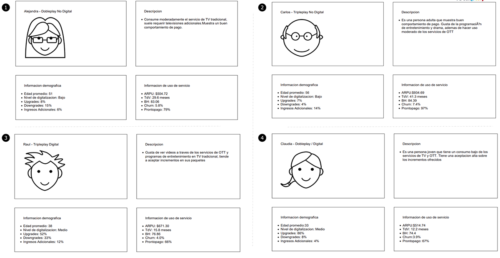

User segmentation
Target
Obtain end-user profiles that serve all areas in order to send effective communication through a process described below.First Approach of the Project
We had previous research of an agency where 36 profiles were established, all of them with similar characteristics, so the objective was to reduce to a considerable amount and with the indispensable characteristics for each area that will use these profiles.Interviews
After analyzing the information, interviews were conducted with the different areas that sent information to users. It was important to know the methodology they used to send the information, at that time it was detected that there was no order between areas for sending information. In these interviews, each of them also expressed the needs to be covered with this segmentation and how they would like to work with the other areas involved.Project Development
Once the information has been compiled, work begins with the data found both from interviews and previous research. Weekly meetings are held with those involved so that they can give feedback on the segments that are being created week by week so that with all this new information the number of segments and information obtained can be reduced.